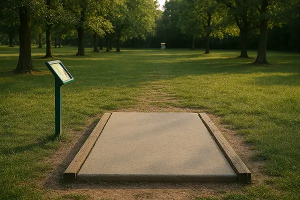
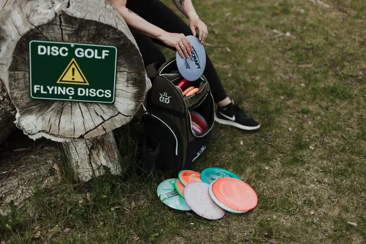
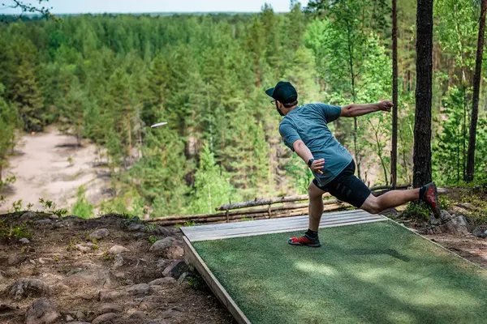

Mikä on frisbeegolf?
Frisbeegolf on helppo ja hauska ulkoilulaji, joka yhdistää liikunnan, luonnossa liikkumisen ja sopivan ripauksen haastetta. Lajissa heitetään frisbeetä kohti maalikoria mahdollisimman vähin heitoin – yksinkertaista oppia, mutta koukuttavaa kehittää. Frisbeegolf sopii kaikenikäisille ja -tasoisille, ja sen pariin on helppo tulla yksin tai yhdessä muiden kanssa.
5 syytä aloittaa frisbeegolf
- Luonnossa liikkuminen: Frisbeegolfia voi pelata metsissä, puistoissa ja muissa ulkoilupaikoissa, joten saat samalla raitista ilmaa ja kauniita maisemia.
- Helppo aloittaa: Aloittelijana tarvitset vain frisbeen ja paikallisen radan, eikä harrastus vaadi kalliita välineitä tai erityistaitoja.
- Koko kehon liikuntaa: Vaikka peli näyttää kevyeltä, heitot ja kävely radalla liikuttavat ylävartaloa, jalkoja ja tasapainoa.
- Sosiaalinen harrastus: Frisbeegolfia voi pelata ystävien kanssa, perheen kesken tai liittyä paikallisiin seuroihin ja kisoihin.
- Mielenrauhaa ja keskittymistä: Peli vaatii keskittymistä heittoihin ja strategian suunnittelua, mikä auttaa rentoutumaan ja irtautumaan arjesta.
Mistä kannattaa aloittaa?

1. Opi perusteet
Opi frisbeegolfin säännöt, miten lasket pisteet ja mitä välineitä tarvitset aloittamiseen.

2. Opi kiekot
Mitä eri tyyppisiä kiekkoja löytyy ja miten valitset oikean kiekon eri tilanteisiin.

3. Opi heitot
Mitä eri heittotekniikoita frisbeegolfin pelaamiseen tarvitaan.